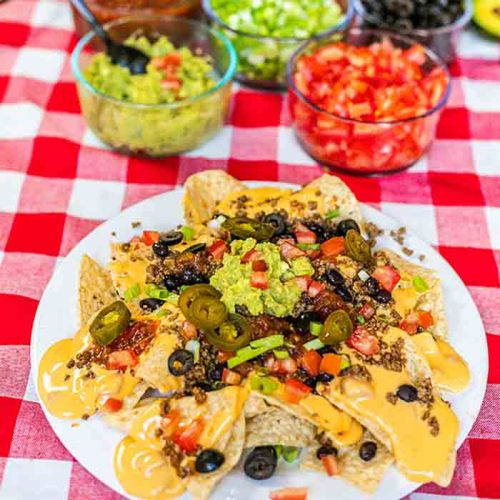

Receipe for Super Nacho
Go back to the Portfolio Home page
Ingridents
- ground beef 🥩
- tortilla chips
- Cheddar cheese 🧀
- green onions
- can sliced jalapeno peppers 🌶 🫑
- can pitted black olives 🫒 , drained and chopped
- avacadoes for guacamole 🥑
Steps
- Cook and stir ground beef 🥩 in a skillet over medium heat until meat is crumbly and no longer pink, 5 to 10 minutes. Drain excess grease. Stir in taco seasoning mix and water and simmer until beef mixture has thickened, 8 to 10 minutes.
- Set the oven rack about 6 inches from the heat source and preheat the broiler. Line a baking sheet with aluminum foil.
- Spread tortilla chips on the prepared baking sheet; top with Cheddar cheese 🧀 and dot with refried beans and ground beef mixture.
- Broil in the preheated oven until cheese is melted, watching carefully to prevent burning, 3 to 5 minutes.
- Top nachos with salsa, sour cream, black olives, green onions, and jalapeno peppers 🌶 🫑 .

repl.it